7. 并发数据访问管理
到目前为止，我们使用的都是仅由我们自己使用的表。实际上，在多用户机器上，数据通常由不同用户共享。这就引出了一个问题：谁可以使用某张表，以及以何种形式（查询、插入、删除、添加等）？
7.1. 创建 Firebird 用户
在使用 IB-Expert 时，我们是以用户 SYSDBA 的身份登录的。可以在 SGBD 的已建立连接属性中找到此信息：
 | 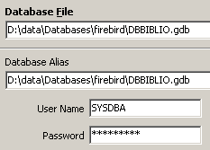 |
右侧显示当前登录用户为 [SYSDBA]。 但其密码 [masterkey] 并未显示。[SYSDBA] 是 Firebird 中的特殊用户：它对 SGBD 管理的所有对象拥有全部权限。 可以通过 IBExpert 用户，使用 [Tools / User Manager] 选项或以下图标创建新用户：

此时将显示用户管理窗口：

点击 [Add] 按钮可创建新用户：

让我们创建以下用户：
用户名 | 密码 |
ADMIN1 | admin1 |
ADMIN2 | admin2 |
SELECT1 | select1 |
SELECT2 | select2 |
UPDATE1 | update1 |
UPDATE2 | update2 |
7.2. 授予用户访问权限
数据库归其创建者所有。我们迄今创建的数据库均属于用户 [SYSDBA]。为说明权限概念，让我们以 [ADMIN1, admin1] 的身份创建（Database / Create Database）一个新数据库：

并将其别名为 DBACCES（ADMIN1）。 使用别名可在同一数据库上建立连接并赋予其不同的标识符，从而便于在 IBExpert 的数据库浏览器中更清晰地识别它们：
 |  |
现在，让我们创建以下两个表：TA 和 TB：
表 TA
 |
表 TB
 |
这些表之间没有关联。
使用 IB-Expert，让我们为数据库 [DBACCES] 创建第二个连接，这次命名为 [ADMIN2 / admin2]。为此，我们使用选项 [Database / Register Database]：
 |  |
定位到 DBACCES（ADMIN2），并打开编辑器 SQL（Shift + F12）：
 |
我们将有机会在同一数据库 [DBACCES] 上使用多种连接。对于每种连接，我们都会有一个编辑器 SQL。 在 [1] 中，编辑器 SQL 显示了所连接数据库的别名。 请利用这一提示来确定您当前所在的是哪个编辑器 SQL。这一点非常重要，因为我们将创建对数据库对象具有不同访问权限的连接。
查询表 TA 的内容：

我们收到以下错误信息：

这是什么意思？数据库 [DBACCESS] 由用户 [ADMIN1] 创建，因此归其所有。 只有他才能访问该数据库中的各个对象。他可以通过命令 SQL GRANT 向其他用户授予访问权限。该命令有多种语法形式，其中一种如下：
GRANT 权限1, 权限2, ...| ALL PRIVILEGES ON table/vue TO 用户1, 用户2, ...| PUBLIC [ WITH GRANT OPTION ] | |
授予访问权限 privilègei 或所有权限 (ALL PRIVILEGES) 授予 table 或 vue 上的用户 utilisateuri 或所有用户 ( PUBLIC )。条款 WITH GRANT OPTION 允许获得特权的用户将其转授给其他用户。 |
可授予的 privilègei 权限包括以下内容：
在表或视图上使用 DELETE 命令的权限。 | |
在表或视图上使用命令 INSERT 的权限 | |
在表或视图上使用命令 SELECT 的权限 | |
在表或视图上使用命令 UPDATE 的权限。 该权限可通过以下语法限制为特定列：GRANT update ( col1, col2, ...) ON 表/视图 TO 用户1, 用户2, ...| PUBLIC [ WITH GRANT OPTION ] |
授予用户 [ADMIN2] 对表 TA 的权限 SELECT。 只有表的所有者才能授予此权限，即 c.a.d。此处为 [ADMIN1]。 切换到连接 DBACCES(ADMIN1)，并打开一个新的编辑器 SQL (Shift+F12)：

接下来，我们将在这两个编辑器（SQL）之间切换。为了方便操作，可以使用菜单中的 [Windows] 选项：

上图显示了两个编辑器 SQL，每个都关联到特定的用户。让我们回到编辑器 SQL(ADMIN1)，并执行以下命令：

然后通过 COMMIT 进行确认：

完成上述操作后，进入用户 ADMIN2 的编辑器，重新执行之前失败的 SELECT 命令：
我们收到以下错误信息：
用户 [ADMIN2] 仍然没有权限查看表 [TA]。 实际上，用户的权限似乎是在登录时加载的。因此，[ADMIN2] 可能仍保留着登录初期的权限，即没有任何权限。让我们验证一下。先注销用户 [ADMIN2]：
- 定位到该连接
- 右键单击该连接并选择 [Deconnect from database] 选项（或按 Shift + Ctrl + D）请求注销

如果弹出面板要求输入 [COMMIT]，请输入 [COMMIT]。然后通过上述 [Reconnect] 选项重新连接用户 [ADMIN2]。 完成上述操作后，返回编辑器 SQL（ADMIN2），并重新执行之前失败的请求 SELECT：
随后将得到以下结果：

这次，ADMIN2 能够访问表 TA，这是因为其所有者 ADMIN1 授予了它 SELECT 权限。 通常这是它拥有的唯一权限。让我们来验证一下。仍然在编辑器 SQL（ADMIN2）中：
 |  |
右侧屏幕显示，ADMIN2 没有 DELETE 针对表 TA 的权限。
返回编辑器 SQL（ADMIN1），为用户 ADMIN2 授予更多权限。我们依次执行以下两条命令：
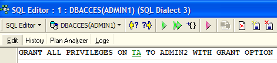 |  |
- 第一个命令授予用户 ADMIN2 对表 [TA] 的全部访问权限，并额外赋予其授予权限的权限 (WITH GRANT OPTION)
- 第二条命令将确认前一条
完成上述操作后，与之前一样，重新连接用户 [ADMIN2]（断开连接/重新连接），然后在编辑器 SQL（ADMIN2）中输入以下命令：
 |  |  |
ADMIN2 已成功删除了表 TA 中的所有行。现在使用 ROLLBACK 撤销此删除操作：
 | | 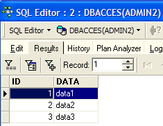 |
让我们验证一下，ADMIN2 是否也能授予对表 TA 的权限。
 | 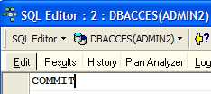 |
现在，让我们使用之前创建的用户之一 [SELECT1 / select1] 的身份，连接到数据库 [DBACCES]（数据库 / 注册数据库），然后双击在 [Database Explorer] 中创建的链接：
 |  |
切换到此新连接，并打开一个新的编辑器 SQL（Shift + F12），在其中输入以下命令：
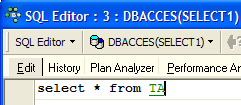 |  |
用户 SELECT1 确实拥有表 TA 上的权限 SELECT。他能否将此权限授予用户 SELECT2？
 |
操作失败，因为用户 SELECT1 未获得将从用户 ADMIN2 处获得的权限 SELECT 进行转授的权限。要实现这一点，用户 ADMIN2 需在其指令 SQL GRANT。权限传递规则很简单：
- 用户只能转发其已接收的权限，且不得超出
- 且仅当其通过 [WITH GRANT OPTION] 权限接收该权限时，方可进行传递
已授予的权限可通过命令 REVOKE 撤销：
REVOKE 权限1, 权限2, ...| ALL PRIVILEGES ON table/vue FROM 用户1, 用户2, ...| PUBLIC | |
删除访问权限 privilègei 或所有权限 (ALL PRIVILEGES) 针对 table 或 vue 的权限，或针对 utilisateuri 用户的权限，或所有用户的权限 ( PUBLIC )。 |
让我们试一试。回到 ADMIN2 的编辑器 SQL，撤销我们之前授予用户 SELECT1 的权限 SELECT：
 |  |
断开用户 SELECT1 的连接，然后重新连接。接着在编辑器 SQL（SELECT1）中查询表 TA 的内容：
 |  |
用户 SELECT1 确实已失去对表 TA 的读取权限。 需要注意的是，该权限最初是由 ADMIN2 授予的，而撤销该权限的是 ADMIN2。 如果 ADMIN1 尝试撤销该权限，系统不会报错，但随后可以发现 SELECT1 仍保留着 SELECT 的权限。
可以通过以下语法将权限授予所有人：GRANT 权限 ON 表/视图 TO PUBLIC。 因此，我们将表 TA 的权限 SELECT 授予所有人。可以使用 ADMIN1 或 ADMIN2 来实现。 我们使用 ADMIN2：
 |  |
使用用户 USER1 / user1 在数据库上建立连接：
 |  |
使用 DBACCES（USER1）连接后，打开一个新的编辑器 SQL（Shift + F12），并输入以下命令：
 | 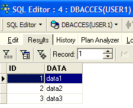 |
用户 USER1 确实拥有表 TA 上的权限 SELECT。
7.3. 事务
7.3.1. 隔离级别
现在我们暂且搁置数据库对象访问权限的问题，转而探讨对这些对象的并发访问问题。假设两位用户对数据库中的某个对象（例如一张表）拥有足够的访问权限，并希望同时使用该对象。此时会发生什么情况？
每个用户都在一个事务中工作。事务是一系列 SQL 命令，其执行具有“原子性”：
- 要么所有操作都成功
- 要么其中一项失败，那么之前的所有操作都会被撤销
最终，事务中的操作要么全部成功应用，要么全部未被应用。当用户自行控制事务时（本文档中均属此情况），用户可通过命令 COMMIT 提交事务，或通过命令 ROLLBACK 取消事务。
每个用户都在属于自己的事务中工作。通常将不同用户之间的隔离级别分为四种：
- 未提交读取
- 已提交读
- 可重复读
- 可串行化
未提交读
此隔离级别也称为“脏读”。以下是一个在此模式下可能发生的情况示例：
- 用户 U1 在表 T 上开始一个事务
- 用户 U2 在同一张表 T 上开始一个事务
- 用户 U1 修改了表 T 中的行，但尚未提交
- 用户 U2 “看到”了这些修改，并根据所见内容做出决策
- 用户通过 ROLLBACK 撤销了其事务
可以看出，在步骤4中，用户U2是基于后来被证明是错误的数据做出的决策。
已提交读取
这种隔离级别可以避免上述问题。在此模式下，步骤4中的用户U2将无法“看到”用户U1对表T所做的修改。 只有在 U1 将其事务提交为 COMMIT 之后，他才会看到这些修改。
在此模式下（也称为“不可重复读”），可能会遇到以下情况：
- 用户 U1 在表 T 上开始一个事务
- 用户 U2 在同一张表 T 上开始一个事务
- 用户 U2 执行 SELECT 操作，以获取满足特定条件的 T 表中各行 C 列的平均值
- 用户 U1 修改（UPDATE）T 表 C 列中的某些值，并提交（COMMIT）
- 用户 U2 再次执行与步骤 3 相同的 SELECT 操作。他将发现，由于 U1 所做的修改，C 列的平均值已经发生了变化。
此时，用户 U2 只能看到由 U1 “提交”的修改。但当他在同一事务中执行时，两个相同的操作（步骤 3 和 5）却产生了不同的结果。 “不可重复读”（Unrepeatable Read）一词正是指这种情况。对于希望获得表 T 稳定快照的人来说，这种情况非常令人困扰。
可重复读
在此隔离级别下，只要用户保持在同一事务中，其对数据库的读取结果必然一致。用户操作的是一张“快照”，其他事务（即使已提交）所做的修改永远不会反映到该快照中。 只有当用户通过 COMMIT 或 ROLLBACK 结束自己的事务时，才会看到这些修改。
然而，这种隔离模式尚不完善。在执行上述操作 3 之后，用户 U2 查询的行会被锁定。 在操作 4 期间，用户 U1 将无法修改（UPDATE）这些行中 C 列的值。但他可以添加新行（INSERT）。 如果新增的某些行满足步骤3中测试的条件，由于新增了这些行，步骤5得出的平均值将与步骤3中得出的不同。
为解决这一新问题，需切换至“Serializable”隔离级别。
Serializable
在此隔离级别下，事务之间完全相互隔离。它确保两个同时进行的事务的结果，与它们依次执行时得到的结果相同。 为了实现这一结果，在操作4中，当用户U1试图添加会改变用户U1的SELECT结果的行时，系统将阻止其操作。 系统将显示一条错误消息，告知其无法插入数据。只有当用户 U2 提交其事务后，该操作才可执行。
并非所有数据库都支持这四种事务隔离级别。Firebird 提供以下隔离级别：
- snapshot：默认隔离模式。对应于 SQL 标准中的“可重复读”模式。
- committed read：对应于 SQL 标准的“committed read”模式
该隔离级别由命令 SET TRANSACTION 设定：
SET TRANSACTION [READ WRITE | READ ONLY] [WAIT|NOWAIT] ISOLATIONLEVEL[SNAPSHOT | READ COMMITTED] | |
下划线标注的关键词为默认值 READ WRITE：事务可读写 READ ONLY：事务仅可读取 WAIT：若两个事务发生冲突，未能完成操作的事务将等待另一个事务被确认。它将无法再发出 SQL 指令。 NOWAIT：未能完成操作的交易不会被阻塞。它会收到一条错误消息，并可继续运行。 ISOLATION LEVEL [SNAPSHOT | READ COMMITTED]：隔离级别 |
我们来试一试。在编辑器 SQL(ADMIN1) 中输入以下命令 SQL：

可以看到该命令未被允许。原因不明……
IB-Expert 提供了另一种设置隔离模式的方法。右键单击连接 DBACCES(ADMIN1)，选择选项 [Database Registration Info]：
 |  |
右侧屏幕显示存在一个选项 [Transactions]。它将允许我们设置事务隔离级别。在此我们将它设置为 [snapshot]。 对连接 DBACCES(ADMIN2) 也进行同样的设置。
7.3.2. 快照模式
让我们来探讨隔离级别 snapshot，这是 Firebird 的默认隔离模式。当用户开始一个事务时，系统会对数据库进行一次快照。用户随后将在此快照上进行操作。 因此，每个用户都在处理属于自己的数据库快照。如果用户对快照进行修改，其他用户是看不到这些修改的。只有当进行修改的用户通过 COMMIT 提交后，其他用户才能看到这些修改。
可考虑以下两种情况：
- 一名用户正在读取表（SELECT），而另一名用户正在修改表（INSERT、UPDATE、DELETE）
- 两名用户同时想要修改该表
7.3.2.1. 一致性读取原则
假设两个用户 U1 和 U2 正在处理同一张表 TAB：
用户 U1 的事务始于时间点 T1a，终于时间点 T1b。
用户 U2 的事务始于时间点 T2a，终于时间点 T2b。
U1正在处理一张由TAB拍摄、拍摄时间为T1a的照片。 在 T1a 和 T1b 之间，他修改了 TAB。 其他用户只能在时间点 T1b 访问这些修改，届时 U1 将生成 COMMIT。
U2正在处理一张由TAB在T2a时间点拍摄的照片， 因此，这张照片与 U1 使用的照片相同（如果其他用户在此期间未修改原始照片的话）。 他无法“看到”用户 U1 对 TAB 所做的任何修改。他只能在时间点 T1b 时看到这些修改。
让我们以数据库 [DBACCES] 为例说明这一点。我们将让两个用户 [ADMIN1] 和 [ADMIN2] 同时进行操作。 我们切换到 DBACCES（ADMIN1）连接，并在 ADMIN1 的 DBACCES 编辑器中执行以下操作：
 |  |  |
ADMIN1 已修改了表 TA 的第 2 行，但尚未提交（COMMIT）其操作。 随后，用户 ADMIN2 对表 TA 执行了 SELECT 操作 （从ADMIN2进入编辑器SQL）。此时处于示例中的T2a时间点之前。
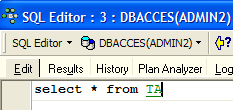 |  |
返回 ADMIN1 的编辑器 SQL，该编辑器确认了添加操作：
 |
返回 SQL 编辑器（来自 ADMIN2），重新生成 SELECT：
 |
ADMIN2 可见 ADMIN1 所做的修改。在快照模式下，只要其他事务尚未结束，当前事务就无法看到这些事务所做的修改。
7.3.2.2. 两个事务对同一数据库对象的并发修改
以会计为例：U1 和 U2 正在处理账户。 U1 从 comptex 账户中借记金额 S，并向 comptey 账户贷记相同金额。该操作将分多个步骤进行：
U1 在时间 T1a 发起一笔交易，在时间 T1b 从 comptex 扣款，在时间 T1c 向 comptey 入账，并在时间 T1d 确认这两笔操作。 此外，假设 U2 也想执行同样的操作，它在时间点 T2a 开始事务，并在时间点 T2d 结束事务，具体流程如下：
--------+----------+----+----+-------+------+-----+-------+---------
T1a T1b T2a T1c T2b T1d T2c T2d
在时间点 T2，对 U2 进行了账户表的快照。根据 snapshot 的原则，该快照是一致的。 U2 可见 comptex 和 comptey 的初始状态，因为 U1 尚未确认其交易。
假设 comptex 的初始余额为 1000 欧元，且用户 U1 和 U2 均希望从该账户中各扣款 100 欧元。
- 在时间点 T1b，U1 从 comptex 的账户中扣除 100 欧元，使其余额变为 90 欧元。该交易将在时间点 T1d 才被确认。
- 在时间点 T2b，U2 看到 comptex 的余额为 1000 欧元（一致性读取原则），于是将其减少 100 欧元，余额变为 90 欧元。
- 最终，在时间点T2d，当所有内容均已通过验证时，comptex的余额将为90欧元，而非预期的80欧元。
解决此问题的方案是：在 U1 完成交易之前，禁止 U2 修改 comptex。 因此，U2 将被锁定直至时间点 T1d。snapshot 模式提供了这一机制。
我们以数据库 DBACCES 为例进行说明。ADMIN1 在其编辑器 SQL（ADMIN1）中启动了一项事务：
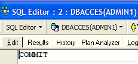 |  |  |  |
我们首先执行了 COMMIT，以确保启动一个新的事务。然后我们删除了第 4 行。该事务尚未提交。
ADMIN2 随后在其编辑器 SQL(ADMIN2) 中启动了一项事务：
 |  |
右侧屏幕显示，ADMIN2试图修改第4行。系统提示其无法进行修改，因为其他人已修改该行但尚未提交该修改。
让我们回到编辑器 SQL（ADMIN1），以完成 COMMIT：

返回编辑器 SQL(ADMIN2)，重新执行命令 UPDATE：
 |  |
 |  |
尽管如后续的 SELECT 所示，第 4 行已不存在，但 UPDATE 操作仍能正常执行。此时，ADMIN2 才发现该行已不存在。
7.3.2.3. 可重复读模式
现在我们来演示“可重复读”模式。这种隔离级别由“快照”模式提供。它确保事务在读取数据库时始终获得相同的结果。
首先，我们使用 ADMIN2 的编辑器 SQL 进行操作：
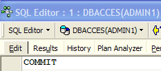 |  |  |
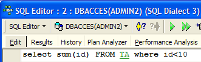 |  |
现在让我们来看一下 SQL 编辑器（来自 ADMIN1）：
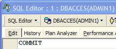 |  |  |
 |  |  |
 |  |
用户 ADMIN1 添加了两行并提交了交易。 现在让我们回到编辑器 SQL(ADMIN2)，重新执行 SELECT SUM：
 |  |
可以看出，尽管ADMIN1中的新增行已通过COMMIT验证，但ADMIN2并未识别到这些新增行。 SELECT 与 SUM 给出的结果与添加行之前相同。这就是可重复读取（Repeatable Read）的原理。
现在，仍在编辑器 SQL （ADMIN2），通过 COMMIT 提交事务，然后重新执行 SELECT SUM：
 |  |  |
ADMIN1 添加的行现已包含在内。
7.3.3. 已提交读取模式
现在我们来演示“Committed Read”模式。该隔离级别与 snapshot 的隔离级别类似，但“Repeatable Read”除外。
首先，我们将这两个连接的事务隔离级别进行更改。
- 断开两个用户 ADMIN1 和 ADMIN2 的连接
- 我们将它们的事务隔离级别进行更改

- 重新连接用户 ADMIN1 和 ADMIN2
现在我们重新使用之前说明“可重复读”的示例，以展示行为已发生变化。首先，我们使用 SQL 编辑器处理 ADMIN2：
| |
|
现在让我们来看一下 SQL 编辑器（来自 ADMIN1）：
| |
| | |
| |
用户 ADMIN1 添加了两行并提交了交易。 现在让我们回到编辑器 SQL(ADMIN2)，重新执行 SELECT SUM：
|  |
SELECT 和 SUM 生成的结果与 ADMIN1 进行增补操作之前的结果不同。这就是快照模式与已提交读取模式之间的区别。